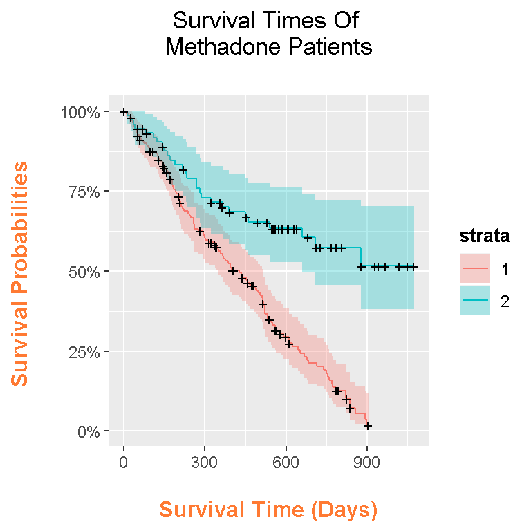

Hi. This page will be about plotting Kaplan-Meier survival curves using R with the ggplot2 data visualization package. When it comes to survival times between two groups we are dealing with the statistical field of survival analysis. Survival analysis deals with time to event data. Events can include a patient being ill, bankruptcy, an employee leaving a company, a person exiting a clinical trial and more.
Plotting Survival Curves Using Base R Graphics
Plotting Survival Curves Using ggplot2 and ggfortify
R Graphics Cookbook by Winston Chang (2012)
The link http://rpubs.com/sinhrks/plot_surv is useful for understanding ggfortify.
The dataset is from http://web1.sph.emory.edu/dkleinb/surv3.htm
The book that I use for understanding Survival Analysis is called Survival Analysis - A Self Learning Text (3rd Edition, 2012) by David G. Kleinbaum & Mitchel Klein. This book teaches the subject in an applied manner and it is suitable for non-statisticians who wish to study the subject. A slight problem is that the R coding section in this book uses base R graphics and does not mention ggplot2.
This addicts dataset can be downloaded from the website http://web1.sph.emory.edu/dkleinb/allDatasets/surv2datasets/addicts.dta. This is a .dta file or a STATA file so the haven package in R is needed to deal with this file type.
This information is from the Survival Analysis - A Self Learning Text (3rd Edition, 2012). A 1991 Australian study by Caplehorn et al. compared two methadone clinics for heroin addicts. The patient’s survival time (in days) is the amount of time the patient spent at the clinic before dropping out.
In the addicts dataset, the variables are defined as:
ID - Patient ID
SURVT - The time in days until the patient dropped out of the clinic or was censored (missing information).
STATUS - 1 for patient dropped out of the clinic or censored; o otherwise
CLINIC - Methadone Treatment Clinic Number 1 or 2
PRISON - An indicator whether the patient had a prison record. 1 for yes, 0 for no
DOSE - Patient’s maximum methadone does (mg/day, continuous variable)
In the bookSurvival Analysis - A Self Learning Text (3rd Edition), the addicts dataset is loaded from the C:\ drive in your computer. I propose that you can load this addicts dataset online under the link of http://web1.sph.emory.edu/dkleinb/surv3.htm. The only slight issue is that the file is a .dta file (for STATA users). To fix this, the haven package in R is used to deal with the .dta files.
If the haven package is not installed into R, you can install haven by typing in:
install.packages("haven")
Here is the code for importing the data.
# Survival Analysis - A Self Learning Text (3rd Edition)
# addicts dataset and Chapter One:
# Dataset can be found at http://web1.sph.emory.edu/dkleinb/surv3.htm.
library(haven) #For importing STATA files.
library(survival)##
## Attaching package: 'survival'## The following object is masked from 'package:faraway':
##
## ratsurl <- "http://web1.sph.emory.edu/dkleinb/allDatasets/surv2datasets/addicts.dta"
# Import data and turn it into a data frame
addicts <- data.frame(read_dta(url))
The read_data() function is needed to read the .dta file. I then convert this into a data.frame and save it to the variable addicts.
It is usually a good idea to preview the data to have an idea of what the data looks like and the type of information you are dealing with. The head() and tail() functions are used here to preview the data.
# A look at the addicts dataset:
head(addicts)## id clinic status survt prison dose
## 1 1 1 1 428 0 50
## 2 2 1 1 275 1 55
## 3 3 1 1 262 0 55
## 4 4 1 1 183 0 30
## 5 5 1 1 259 1 65
## 6 6 1 1 714 0 55tail(addicts)## id clinic status survt prison dose
## 233 260 1 1 59 1 45
## 234 261 1 1 33 1 60
## 235 262 2 1 540 0 80
## 236 263 2 0 551 0 65
## 237 264 1 1 90 0 40
## 238 266 1 1 47 0 45
It may seem that the id column is redundant at first but if you look at the output from tail(addicts) you see that a few id numbers were skipped. We have 238 rows but the last id number is 266. Keep the id column and work with what we have.
For more information on the variables, the summary() and str() functions can be used.
# Summary and data structure:
summary(addicts)## id clinic status survt
## Min. : 1.00 Min. :1.000 Min. :0.0000 Min. : 2.0
## 1st Qu.: 65.25 1st Qu.:1.000 1st Qu.:0.0000 1st Qu.: 171.2
## Median :131.50 Median :1.000 Median :1.0000 Median : 367.5
## Mean :134.13 Mean :1.315 Mean :0.6303 Mean : 402.6
## 3rd Qu.:205.75 3rd Qu.:2.000 3rd Qu.:1.0000 3rd Qu.: 585.5
## Max. :266.00 Max. :2.000 Max. :1.0000 Max. :1076.0
## prison dose
## Min. :0.0000 Min. : 20.0
## 1st Qu.:0.0000 1st Qu.: 50.0
## Median :0.0000 Median : 60.0
## Mean :0.4664 Mean : 60.4
## 3rd Qu.:1.0000 3rd Qu.: 70.0
## Max. :1.0000 Max. :110.0str(addicts)## 'data.frame': 238 obs. of 6 variables:
## $ id : atomic 1 2 3 4 5 6 7 8 9 10 ...
## ..- attr(*, "label")= chr "Subject ID"
## ..- attr(*, "format.stata")= chr "%10.0g"
## $ clinic: atomic 1 1 1 1 1 1 1 1 1 1 ...
## ..- attr(*, "label")= chr "Coded 1 or 2"
## ..- attr(*, "format.stata")= chr "%10.0g"
## $ status: atomic 1 1 1 1 1 1 1 0 1 1 ...
## ..- attr(*, "label")= chr "status (0=censored, 1=endpoint)"
## ..- attr(*, "format.stata")= chr "%10.0g"
## $ survt : atomic 428 275 262 183 259 714 438 796 892 393 ...
## ..- attr(*, "label")= chr "survival time in days"
## ..- attr(*, "format.stata")= chr "%10.0g"
## $ prison: atomic 0 1 0 0 1 0 1 1 0 1 ...
## ..- attr(*, "label")= chr "0=none, 1=prison record"
## ..- attr(*, "format.stata")= chr "%10.0g"
## $ dose : atomic 50 55 55 30 65 55 65 60 50 65 ...
## ..- attr(*, "label")= chr "methadone dose (mg/day)"
## ..- attr(*, "format.stata")= chr "%10.0g"
In the str() output, all the variables are atomic. The variable clinic should be a factor and the rest of the variables should be numeric and not atomic.
# Modify data types for each variable in addicts
# Clinic is a factor variable, everything else is numeric.
addicts$id <- as.numeric(addicts$id)
addicts$clinic <- as.factor(addicts$clinic)
addicts$status <- as.numeric(addicts$status)
addicts$survt <- as.numeric(addicts$survt)
addicts$prison <- as.numeric(addicts$prison)
addicts$dose <- as.numeric(addicts$dose)
I could verify the variable types by using str() again.
# Check data types:
str(addicts)## 'data.frame': 238 obs. of 6 variables:
## $ id : num 1 2 3 4 5 6 7 8 9 10 ...
## $ clinic: Factor w/ 2 levels "1","2": 1 1 1 1 1 1 1 1 1 1 ...
## $ status: num 1 1 1 1 1 1 1 0 1 1 ...
## $ survt : num 428 275 262 183 259 714 438 796 892 393 ...
## $ prison: num 0 1 0 0 1 0 1 1 0 1 ...
## $ dose : num 50 55 55 30 65 55 65 60 50 65 ...
The Surv() function gives a list of times (in days) until the patient has dropped out of the methadone clinic. Cases with the plus sign indicate censorship rather than the event of the patient dropping out.
# Survival times until event
Surv(time = addicts$survt, event = addicts$status == 1)## [1] 428 275 262 183 259 714 438 796+ 892 393 161+
## [12] 836 523 612 212 399 771 514 512 624 209 341
## [23] 299 826+ 262 566+ 368 302 602+ 652 293 564+ 394
## [34] 755 591 787+ 739 550 837 612 581+ 523 504 785
## [45] 774 560 160 482 518 683 147 563 646 899 857
## [56] 180 452 760 496 258 181 386 439+ 563+ 337 613+
## [67] 192 405+ 667 905+ 247 821 821 517+ 346+ 294 244
## [78] 95 376 212 96 532 522 679 408+ 840+ 148+ 168
## [89] 489 541+ 205 475+ 237 517 749 150 465 708 713+
## [100] 146+ 450 555+ 460 53+ 122 35 532+ 684+ 769+ 591+
## [111] 769+ 609+ 932+ 932+ 587+ 26 72+ 641+ 367+ 633+ 661
## [122] 232 13 563+ 969+ 1052+ 944+ 881+ 190 79 884+ 170
## [133] 286 358+ 326+ 769+ 161 564+ 268 611+ 322 1076+ 2+
## [144] 788+ 575+ 109 730+ 790+ 456+ 231 143 86+ 1021+ 684+
## [155] 878 216 808+ 268 222+ 683+ 496+ 389 126 17 350
## [166] 531+ 317+ 461+ 37 167 358 49 457 127 7 29
## [177] 62 150+ 223 129+ 204+ 129 581 176 30 41 543+
## [188] 210+ 193 434 367 348 28+ 337+ 175+ 149 546 84
## [199] 283+ 533 207 216 28+ 67 62+ 111+ 257 136 342+
## [210] 41 531+ 98+ 145 50 53+ 103+ 2+ 157 75 19
## [221] 35 394+ 117 175 180 314 480+ 325+ 280 204 366
## [232] 531+ 59 33 540 551+ 90 47
An optional line of code is to look at the summary statistics of this Surv() function by using summary().
summary(Surv(time = addicts$survt, event = addicts$status == 1))## time status
## Min. : 2.0 Min. :0.0000
## 1st Qu.: 171.2 1st Qu.:0.0000
## Median : 367.5 Median :1.0000
## Mean : 402.6 Mean :0.6303
## 3rd Qu.: 585.5 3rd Qu.:1.0000
## Max. :1076.0 Max. :1.0000
The shortest clinic staying time is 2 days and the longest time a patient stayed at a methadone clinic was 1076 days.
To start, a variable Y is created as the survival object in R. This Surv() function is the outcome variable for survfit() which will be used later. (This Surv() function is the same as in the previous section.)
# Chapter One: Estimating Survival Functions And Comparing Them Across Strata:
# Surv creates survival object which is the response variable
Y = Surv(addicts$survt, addicts$status == 1)
The survfit() function produces Kaplan-Meier survival estimates. It takes in our Surv() function indicated by Y. We stratify by clinic as we are comparing the two methadone clinics.
# Actual Plot:
# Stratify by CLINIC variable:
kmfit = survfit(Y ~ addicts$clinic)
The summary function of kmfit gives a table of times (in days), the number of patients in the study, the number of patients who dropped out at each time point, the associated standard errors, the lower and upper limits of the 95% confidence intervals for the survival estimates.
# Base R Plot:
# Book had c(0,100,200,300,400,500,600,700,800,900,1000), I use the seq function.
summary(kmfit, times = c(seq(0, 1000, by = 100)))## Call: survfit(formula = Y ~ addicts$clinic)
##
## addicts$clinic=1
## time n.risk n.event survival std.err lower 95% CI upper 95% CI
## 0 163 0 1.0000 0.0000 1.00000 1.000
## 100 137 20 0.8746 0.0262 0.82467 0.928
## 200 110 20 0.7420 0.0353 0.67601 0.814
## 300 87 20 0.6046 0.0399 0.53120 0.688
## 400 68 14 0.5025 0.0415 0.42741 0.591
## 500 53 9 0.4319 0.0418 0.35719 0.522
## 600 30 16 0.2951 0.0403 0.22570 0.386
## 700 20 8 0.2113 0.0383 0.14818 0.301
## 800 10 8 0.1268 0.0326 0.07660 0.210
## 900 1 7 0.0181 0.0172 0.00283 0.116
##
## addicts$clinic=2
## time n.risk n.event survival std.err lower 95% CI upper 95% CI
## 0 75 0 1.000 0.0000 1.000 1.000
## 100 66 5 0.932 0.0294 0.876 0.991
## 200 58 7 0.832 0.0442 0.750 0.924
## 300 50 7 0.730 0.0530 0.633 0.842
## 400 43 3 0.685 0.0558 0.584 0.804
## 500 39 2 0.653 0.0577 0.549 0.776
## 600 27 1 0.634 0.0590 0.528 0.761
## 700 19 1 0.606 0.0625 0.495 0.742
## 800 11 1 0.575 0.0669 0.457 0.722
## 900 7 1 0.517 0.0812 0.380 0.703
## 1000 3 0 0.517 0.0812 0.380 0.703# In CLINIC = 1, survival times stopped at 900 instead of 1000 as there is no subject
# at risk on day 1000.
# Could've also used 100*(0:10)
Here is the code and output for the Kaplan-Meier curves in base R graphics.
plot(kmfit, lty = c("solid", "dashed"), col = c("black", "grey"), xlab = "Survival Time In Days", ylab = "Survival Probabilities")
legend("topright", c("Clinic 1", "Clinic 2"), lty = c("solid", "dashed"), col = c("black", "grey"))
The base R graphics version of the Kaplan-Meier survival curves is not visually appealing. With the help of the ggplot2 and ggfortify packages, nicer plots can be produced.
Here is the code and output for the Kaplan-Meier curves with ggplot2 and ggfortify.
## Trying to find ggplot version of the above plots:
# http://rpubs.com/sinhrks/plot_surv for ggfortify & survival curves
# http://rpubs.com/sinhrks/plot_surv for ggfortify basics
#
# Plotting Survival Curves Using ggplot2 and ggfortify:
library(ggplot2)
library(ggfortify)
model_fit <- survfit(Surv(survt, status) ~ clinic, data = addicts)
autoplot(model_fit) +
labs(x = "\n Survival Time (Days) ", y = "Survival Probabilities \n",
title = "Survival Times Of \n Methadone Patients \n") +
theme(plot.title = element_text(hjust = 0.5),
axis.title.x = element_text(face="bold", colour="#FF7A33", size = 12),
axis.title.y = element_text(face="bold", colour="#FF7A33", size = 12),
legend.title = element_text(face="bold", size = 10))
In this plot, the colours help the reader identify which curve goes with which clinic. The shaded bands represent the confidence intervals and each time point. The plus signs represent the censored cases at a given time point.
More patients stay in clinic 2 than in clinic 1 since the survival curve is higher than the curve for clinic 1. An investigation is recommended in determining on why a lot of the patients in clinic one leave. It could be the clinic, it could the selection of patients or something else not explained by the data.